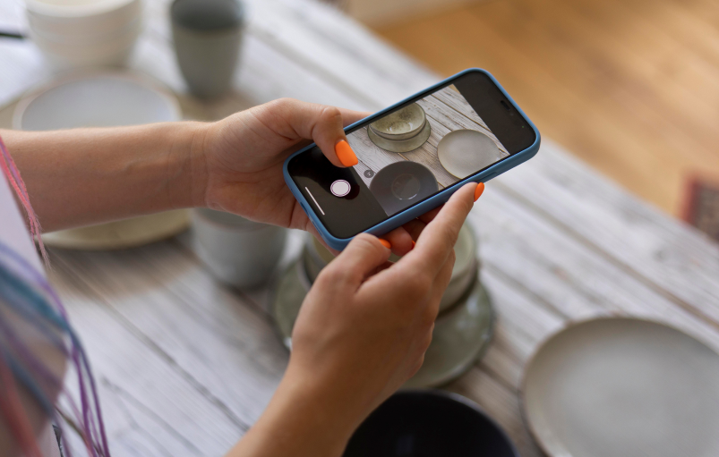

Comunicación / 1UP
¿Estás mostrando lo que vendés?
La gente no compra solo lo que vendés, te compra a vos, a la persona real que hay detrás de la marca.

Me falta tiempo pero lo resuelvo
Más que entendible, no solo hay que dedicarle el tiempo a lo que hacemos, sino también a la difusión del emprendimiento. Las nuevas tecnologías como la inteligencia artificial o ciertos programas vienen para facilitarnos las cosas: hacer un flyer (un volante, un cartelito, una publicación) rápidamente, subirlo o imprimirlo y listo, ya vamos a ganar miles de seguidores y a vender.
El juego cambió
Las redes sociales, el marketing y la comunicación ya no funcionan como hace 10 años, ni 5, ni siquiera como hace 1. Las cosas empiezan siendo gratuitas pero cuando se masifican ya sabemos lo que pasa: se empiezan a limitar y lo que ayer era una oportunidad, hoy es una restricción.
Es cierto que si pagamos Chat GPT o Claude vamos a obtener mejores resultados, pero también hay que saber usarlos. Lo mismo con la versión paga de CapCut o Adobe. Recordemos que son herramientas y como tales, hay que aprenderlas.
Pero, no todo está perdido, solo hay que cambiar la estrategia. Últimamente es tal la saturación de contenido genérico e igual, que corremos con una ventaja: nuestra autenticidad.
¿Y ahora, quién podrá ayudarnos?
De momento, nosotros mismos. ¿No te sale hacer videos? Hacé un carrusel mostrando alguno de tus productos, mostrá el antes y el después, el detrás de escena, los materiales que usás. Hay infinidad de formas de contar tu historia y conectar con tu audiencia.
¿La tenés más clara con los videos? No hace falta saber editar, podés poner subtítulos automáticos en el mismo Instagram o TikTok. Mostrá tu autenticidad, quién está detrás de la marca y de los productos o servicios que vendés.
Porque al final, el día que no puedas usar la IA u otra herramienta, vas a saber qué y cómo hacerlo, te las vas a poder areglar sola/o. Recordá que la herramienta más poderosa la educación. Cuánto más sabés, más preparada/o vas a estar.
Volver a todos los artículos ←